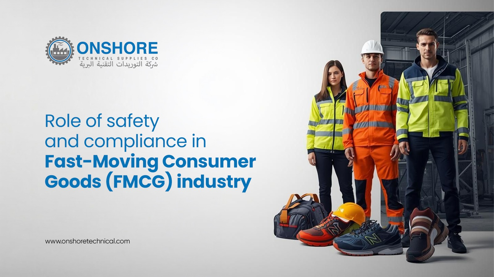

The Role of Safety and Compliance in Modern FMCG Operations

The Fast-Moving Consumer Goods (FMCG) industry is one of the most demanding and competitive sectors in the global market. From food and beverages to personal care and household products, FMCG businesses operate in fast-paced production environments where efficiency, hygiene, safety, and compliance are critical. Even a minor disruption in operations can lead to costly downtime, product recalls, delayed deliveries, or safety hazards.
In today’s highly regulated industrial landscape, maintaining workplace safety and regulatory compliance is no longer optional. It is essential for operational success. Companies that invest in the right industrial tools, safety equipment, and technical support are better prepared to meet industry standards while improving productivity and reducing risks.
At Onshore Technical Supplies, we understand the unique challenges faced by FMCG manufacturers, packagers, and distributors. With years of experience supplying industrial tools and safety solutions, we help businesses maintain efficient, compliant, and uninterrupted operations.
Why Safety Matters in FMCG Operations
FMCG production facilities are high-speed environments that involve machinery, packaging systems, material handling, and continuous workforce movement. Without proper safety measures, these workplaces can become vulnerable to accidents, contamination risks, equipment failures, and operational interruptions.
Implementing industrial safety practices helps companies:
- Protect employees from workplace hazards
- Reduce operational downtime
- Prevent contamination and product damage
- Improve productivity and workflow efficiency
- Maintain customer trust and brand reputation
- Meet local and international compliance standards
Workplace safety is especially important in industries such as food manufacturing and personal care production, where hygiene and contamination control directly impact consumer health.
The Importance of Compliance in the FMCG Industry
Compliance refers to following industry regulations, quality standards, and workplace safety requirements. FMCG businesses must comply with strict operational guidelines to ensure product quality, employee safety, and environmental responsibility.
Some important areas of FMCG compliance include:
- Workplace safety regulations
- Food-grade equipment standards
- Hygiene and sanitation requirements
- Hazard prevention procedures
- Personal protective equipment (PPE) standards
- Quality control and inspection protocols
Failure to comply with these standards can result in financial losses, legal penalties, production shutdowns, and reputational damage.
This is why many FMCG companies invest in reliable technical supply partners that understand industrial compliance requirements and provide certified, high-performance solutions.
How the Right Industrial Tools Improve FMCG Efficiency
The right industrial tools and safety equipment play a major role in improving operational efficiency. Reliable equipment helps reduce machine downtime, increases production accuracy, and supports safer working conditions.
Modern FMCG facilities require:
- Durable industrial tools
- Reliable maintenance equipment
- High-quality safety gear
- Efficient material handling solutions
- Compliance-ready products
- Equipment designed for hygienic environments
Using low-quality or unsuitable equipment can slow production and increase operational risks. Businesses that prioritize quality technical supplies are able to maintain smoother workflows and long-term productivity.
Hygiene and Safety in High-Pressure Production Environments
Hygiene is one of the most critical aspects of FMCG operations, particularly in food and beverage manufacturing. Production environments must remain clean, organized, and compliant with strict hygiene standards.
Industrial tools and safety products used in these facilities must be suitable for clean environments and capable of performing under pressure. Equipment should support easy maintenance, contamination prevention, and operational reliability.
At Onshore Technical Supplies, we supply industrial solutions designed for demanding FMCG environments. Our expertise allows us to support manufacturers with products that meet safety expectations, operational standards, and production efficiency goals.
Why Choosing the Right Technical Supply Partner Matters
A trusted technical supplier does more than simply provide products. The right partner understands industry requirements, operational urgency, and the importance of reliability.
Businesses in the FMCG sector need suppliers who can:
- Deliver quality-assured products
- Support compliance requirements
- Understand production challenges
- Minimize operational delays
- Provide dependable safety solutions
- Ensure consistent product performance
With extensive industry experience, Onshore Technical Supplies has built a strong reputation for supporting industrial operations with reliable tools and safety equipment. Our focus on quality, precision, and customer support helps FMCG businesses maintain smooth and efficient workflows.
The Future of Safety and Compliance in FMCG
As the FMCG industry continues to evolve, safety and compliance standards are becoming more advanced. Businesses are increasingly adopting smarter operational strategies, automation, and high-performance industrial solutions to improve efficiency and reduce risks.
Companies that prioritize safety, compliance, and operational excellence will be better positioned to compete in a rapidly changing market. Investing in reliable industrial tools and safety equipment is not just about meeting regulations — it is about building long-term business sustainability and customer confidence.
Conclusion
Safety and compliance are the foundation of successful FMCG operations. From maintaining hygiene standards to reducing downtime and protecting employees, every aspect of industrial safety contributes to operational efficiency and business growth.
Choosing reliable technical solutions and experienced supply partners can make a significant difference in maintaining productivity and meeting industry expectations.
At Onshore Technical Supplies, we are committed to supporting FMCG industries with dependable industrial tools, safety equipment, and technical expertise designed for modern production environments.
Frequently Asked Questions
Safety helps protect employees, prevent operational disruptions, maintain hygiene standards, and reduce workplace accidents in fast-paced production environments.
Compliance refers to following industry regulations, safety guidelines, hygiene standards, and quality control requirements to ensure safe and efficient operations.
High-quality industrial tools reduce downtime, improve operational accuracy, support maintenance activities, and help maintain continuous production flow.
Hygiene is essential to prevent contamination, maintain product quality, and ensure consumer safety, especially in food and personal care manufacturing.
Onshore Technical Supplies provides reliable industrial tools and safety equipment designed to meet the speed, hygiene, safety, and compliance needs of modern FMCG operations.
Certified safety equipment helps businesses meet compliance standards, improve worker protection, reduce risks, and maintain safer industrial environments.